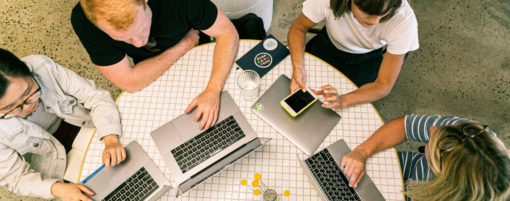

About Our Website
Our application is designed to facilitate collaboration among students, allowing them to share academic resources and engage in discussions pertinent to their courses and other materials. Whether you're looking to access lecture notes, discuss challenging concepts, or connect with fellow classmates, our platform provides a space to foster learning and build a network within the student community.
We believe that by creating an environment where students can easily share knowledge and support each other's academic endeavors, we can enhance the learning experience and empower individuals to achieve their educational goals.

Our commitment to fostering a vibrant learning ecosystem extends far beyond the confines of conventional education. We recognize that learning is not confined to the walls of a classroom or the pages of a textbook; it is a dynamic process that thrives on collaboration, curiosity, and community engagement. As such, our platform serves as a beacon of innovation, where students from all walks of life can converge to share their expertise, explore new ideas, and embark on intellectual adventures together.

Moreover, we understand that the journey of learning is not always smooth sailing; it is often fraught with challenges, setbacks, and moments of self-doubt. That's why we place a strong emphasis on peer support and mentorship, encouraging students to lean on one another for guidance, encouragement, and solidarity. Through our platform, students can form study groups, seek advice from upperclassmen, or simply find solace in knowing that they are not alone in their academic pursuits.
But our vision extends beyond mere academic achievement; we aspire to cultivate a community of lifelong learners who are passionate about expanding their horizons, challenging the status quo, and making a positive impact on the world. Whether it's through volunteering, advocacy, or innovative research projects, we believe that education is a catalyst for social change and personal growth.
In essence, our platform is more than just a tool for sharing resources and connecting with classmates; it is a catalyst for transformation, a catalyst for empowerment, and a catalyst for building a brighter future for generations to come. So come join us on this journey of discovery, collaboration, and endless possibilities. Together, let's redefine the boundaries of education and unlock the full potential of every student, one interaction at a time.